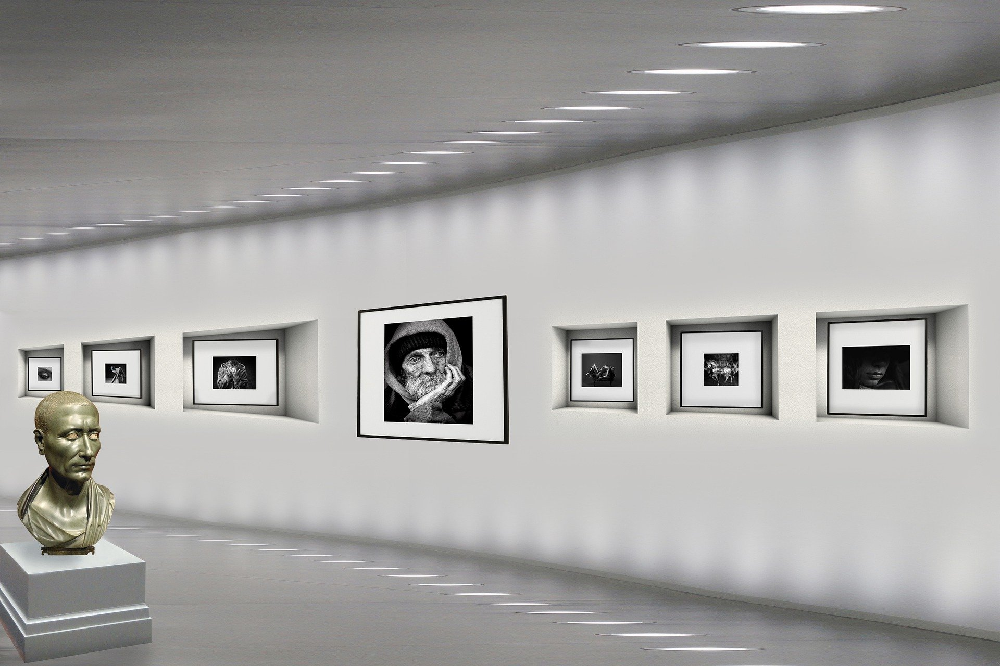

ピースおおさか（大阪国際平和センター）
大阪空襲を語り継ぐ平和ミュージアム。2015(平成27)年4月30日リニューアルオープン。

営業時間
9:30～17:00（入館は16：30まで）
休日
月曜日、月末、祝日の翌日、年末年始（12/28～1/4）
※ 祝日の翌日及び月末が日曜日の場合は、翌々日の火曜日が休館
1991年、大阪城公園の一角にオープンした大阪国際平和センター「ピースおおさか」。大阪空襲を語り継ぐ平和ミュージアムとして2015年4月にリニューアルオープン。大阪空襲の犠牲者を追悼し、平和を祈念するとともに、空襲を中心に大阪の人々の戦争体験に関する資料を展示している。図書室や映像コーナーも備えており、戦争や世界平和に関する書籍をはじめ、平和学習のためのパネルや紙芝居、ビデオなどの貸し出しも行っている。また、250人を収容できる講堂では、アニメや映画の上映、講演会やコンサートなども開催。
住所
〒 540-0002 大阪市中央区大阪城2-1
アクセス
JR大阪環状線・Osaka Metro中央線「森ノ宮駅」より徒歩約7分
料金
大人250円、高校生150円、中学生以下無料
電話番号
06-6947-7208